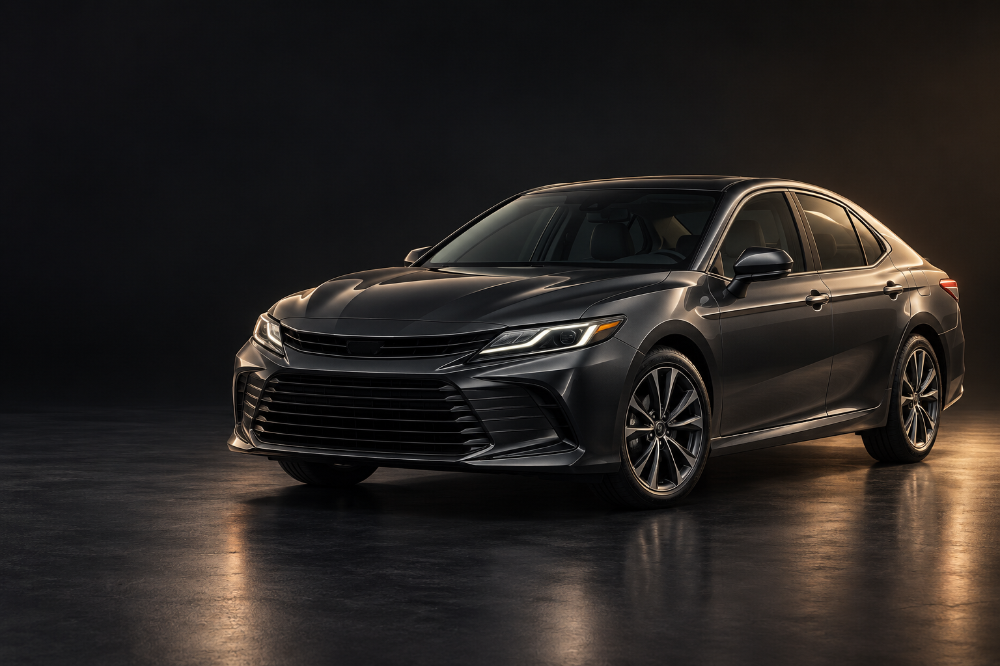
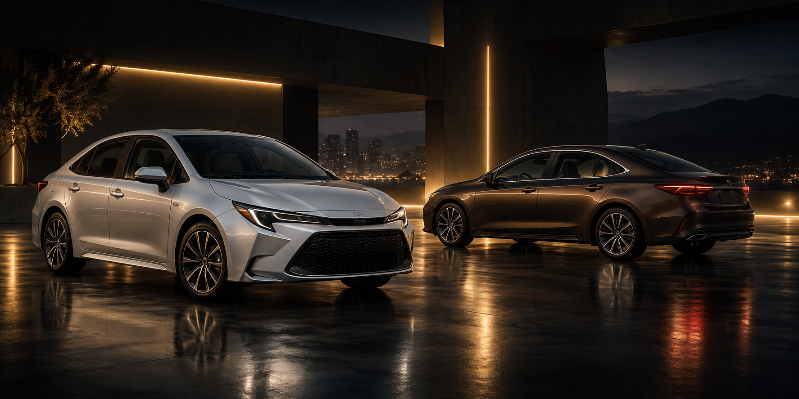

Уже есть кредиты
Если банк отказал из-за действующих кредитов, вы можете обратиться к нам. Обсудим автомобиль, взнос и ежемесячный платёж.

Пользуйтесь автомобилем сейчас.
Постепенно выкупайте его в собственность.
По прямому договору с нами, без участия банка.
Есть другие кредиты или банк отказал? Рассмотрим вашу заявку индивидуально.
Берёте его в аренду и постепенно выкупаете в собственность.
Мы не занимаемся выкупом ваших автомобилей.
Вы арендуете автомобиль у нас и выкупаете его по договору. Банк в сделке не участвует.
Если банк отказал из-за действующих кредитов, вы можете обратиться к нам. Обсудим автомобиль, взнос и ежемесячный платёж.
Работаете на себя или не можете подтвердить доход справкой? Для рассмотрения нужны паспорт и водительское удостоверение.
Оформляете договор напрямую с компанией. Пользуетесь машиной и вносите фиксированный платёж каждый месяц.
Проверяем кредитную историю и рассматриваем каждую заявку индивидуально. Отказ банка не означает автоматического отказа у нас, но одобрение не гарантировано.
Обсудить мою ситуациюДокументы, платежи и получение автомобиля.
Минимальный пакет для рассмотрения. Без подтверждения дохода.
Ежемесячная сумма фиксируется на весь срок: от 12 до 36 месяцев.
Выбирайте машину лично. После согласования выдача занимает около часа.
Далее расходы несёт клиент. Все правила доступны до оформления.
Поездки по Москве и области. Выезды за пределы МО согласуются.
Без участия банка. После полного расчёта автомобиль становится вашим.
Первоначальный взнос: от 50 000 ₽, целиком. Заявки рассматриваются индивидуально с проверкой истории.
Полные условияОткройте объявления, чтобы посмотреть предложения и уточнить наличие напрямую.
Фотографии реальных автомобилей. Наличие и индивидуальные условия уточняйте перед визитом.

Понятный путь от выбора машины до её полного выкупа.
Приезжаете в Балашиху: выбираете автомобиль, осматриваете его и проходите тест-драйв.
Рассматриваем документы и историю. Согласовываем взнос, срок и фиксированный платёж.
Подписываете договор, вносите первый взнос и получаете автомобиль. Выдача занимает около часа после согласования.
Вносите фиксированный платёж каждый месяц на протяжении 12–36 месяцев.
После закрытия всех платежей по графику автомобиль переходит в вашу собственность.
Ежемесячный платёж зависит от выбранной машины, первоначального взноса и срока выкупа. После оформления он фиксируется на весь срок.
От 50 000 ₽, вносится целиком. Разделить первый взнос на части нельзя.
Сумму и полный график уточним по конкретному автомобилю. Числовой расчёт пока недоступен.
Откроется чат с подготовленным сообщением. Отправку подтверждаете вы.
Работаем с клиентами из Москвы и области. Выезд за пределы Московской области: только по согласованию.
Работа в такси запрещена. Автомобили не имеют лицензии для такси.
Вы выбираете и осматриваете автомобиль лично, с тест-драйвом. Доставки нет: получение в Балашихе, Лукино, 84.
Договориться о просмотреВозможен при погашении всех платежей за весь согласованный срок. Сумма платежей не сокращается при досрочном закрытии.
Автомобиль можно вернуть. Ранее внесённые деньги не возвращаются.
Вы оформляете аренду с последующим выкупом непосредственно с компанией: собственником автомобиля.
Паспорт и водительское удостоверение, стаж от трёх лет. Подтверждение дохода не требуется; решение принимается индивидуально.
Вы пользуетесь машиной и движетесь к переходу автомобиля в вашу собственность по договору.
| Что сравниваем | Автокредит | Аренда с выкупом у нас |
|---|---|---|
| С кем оформляете | С банком | С компанией напрямую |
| Одобрение банка | Требуется | Банк не участвует |
| Условия и платежи | По кредитному договору | По договору аренды с выкупом |
Наш офис находится в Балашихе, Лукино, 84. Приезжайте на осмотр и тест-драйв, чтобы выбрать автомобиль лично.
Адрес и контактыНет. Вы берёте автомобиль нашей компании в аренду и постепенно выкупаете его в собственность. Мы не занимаемся выкупом ваших автомобилей.
После закрытия всех платежей по графику и оформления перехода собственности.
Нет. Первоначальный взнос обязателен: минимум 50 000 ₽. Он вносится целиком, без разделения на части.
От 12 до 36 месяцев, платежи ежемесячные. Сумма зависит от автомобиля, первого взноса и срока и фиксируется на весь срок договора.
Да. Проверяем кредитную историю и другие сведения о клиенте. Каждую заявку рассматриваем индивидуально, возможен отказ. Банк в сделке не участвует, подтверждение дохода не требуется.
Паспорт и водительское удостоверение, водительский стаж от трёх лет.
Да, но необходимо закрыть все платежи за весь согласованный срок. Досрочное закрытие не уменьшает их общую сумму.
Автомобиль можно вернуть, но ранее внесённые деньги не возвращаются.
ОСАГО в первый год: за наш счёт. Далее все расходы несёт клиент. Подменный автомобиль не предоставляется.
Нет. Использование в такси невозможно: автомобили без лицензии для такси. Передача третьим лицам запрещена договором.
Пробег не ограничен. Работаем по Москве и Московской области. Выезды за пределы МО нужно согласовать.
Доставки нет. Вы приезжаете в Балашиху, Лукино, 84, осматриваете машину и проходите тест-драйв. После согласования условий и оформления выдача занимает около часа.
Как первый взнос и срок влияют на график аренды с выкупом. Какие суммы уточнить до оформления.
Читать материалДокументы, стаж, осмотр и тест-драйв: что подготовить перед визитом в Балашиху.
Читать материалПорядок досрочного закрытия, возврата автомобиля и перехода собственности по условиям компании.
Читать материалПодберём автомобиль под ваши поездки и расскажем, как устроен выкуп.
+7 (965) 234-84-84
Время визита согласуйте по телефону.